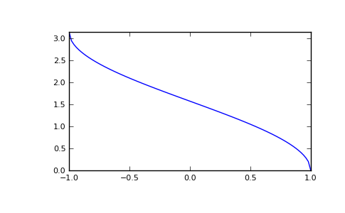

numpy.arccos¶
- numpy.arccos(x[, out]) = <ufunc 'arccos'>¶
Trigonometric inverse cosine, element-wise.
The inverse of cos so that, if y = cos(x), then x = arccos(y).
Parameters : x : array_like
x-coordinate on the unit circle. For real arguments, the domain is [-1, 1].
out : ndarray, optional
Array of the same shape as a, to store results in. See doc.ufuncs (Section “Output arguments”) for more details.
Returns : angle : ndarray
The angle of the ray intersecting the unit circle at the given x-coordinate in radians [0, pi]. If x is a scalar then a scalar is returned, otherwise an array of the same shape as x is returned.
Notes
arccos is a multivalued function: for each x there are infinitely many numbers z such that cos(z) = x. The convention is to return the angle z whose real part lies in [0, pi].
For real-valued input data types, arccos always returns real output. For each value that cannot be expressed as a real number or infinity, it yields nan and sets the invalid floating point error flag.
For complex-valued input, arccos is a complex analytic function that has branch cuts [-inf, -1] and [1, inf] and is continuous from above on the former and from below on the latter.
The inverse cos is also known as acos or cos^-1.
References
M. Abramowitz and I.A. Stegun, “Handbook of Mathematical Functions”, 10th printing, 1964, pp. 79. http://www.math.sfu.ca/~cbm/aands/
Examples
We expect the arccos of 1 to be 0, and of -1 to be pi:
>>> np.arccos([1, -1]) array([ 0. , 3.14159265])
Plot arccos:
>>> import matplotlib.pyplot as plt >>> x = np.linspace(-1, 1, num=100) >>> plt.plot(x, np.arccos(x)) >>> plt.axis('tight') >>> plt.show()
(Source code, png, pdf)

{kind=link}